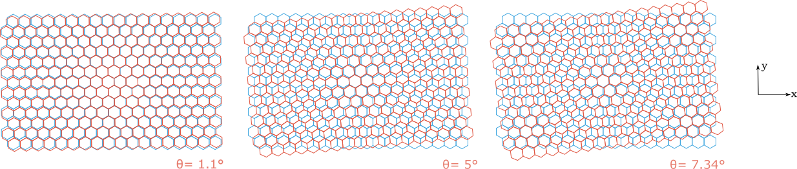
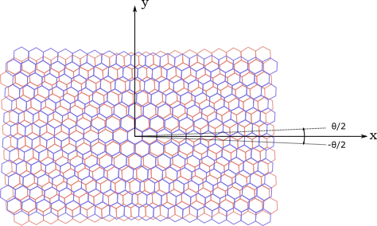
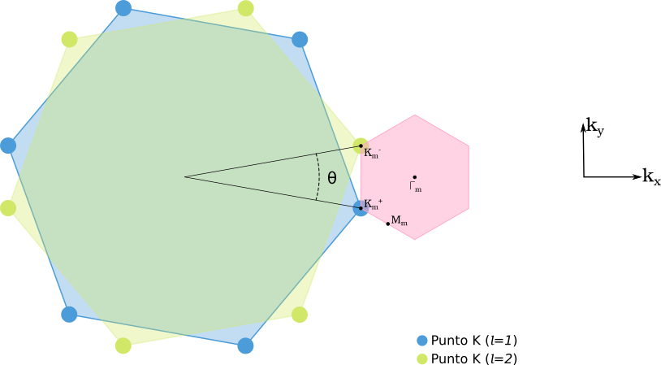

Bicapa de grafeno rotada¶
Consideramos dos capas de grafeno apiladas (A-B) y rotadas entre ellas un ángulo \(\theta\). La periodicidad espacial de cada capa genera un efecto de interferencia que resulta en un patrón de Moiré. Para que se produzca una supercelda conmensurada, el ángulo de rotación debe cumplir la siguiente relación.

\begin{equation}
\cos \theta = \frac {3m_o^2+3m_or+r^2/2}{3m_o^2+3m_or+r^2}
\end{equation}
donde \(m_o\) y \(r\) son enteros positivos coprimos y $0^{\circ} < \theta < 30^{\circ} $. El efecto de estos parámetros se refleja en los vectores de la supercelda de Moiré en el espacio real y recíproco.
La supercelda de Moiré tendrá una periodicidad de mayor área a comparación de la celda unitaria en grafeno.
Geometría de red¶
Espacio real¶
Se parte de un apilamiento A-B entre la capa 1 y la capa 2, luego se rotan \(\theta/2\) y -\(\theta/2\), respectivamente.

En el espacio real, consideramos los vectores de cada capa (\(l\)) de la forma:
\begin{equation} \textbf{R}{l}= n_1 \textbf{a}{l,1} + n_2 \textbf{a}_{l,2} \quad n_1, n_2 \in \mathbb{Z} \end{equation}
Recordando que los vectores base \(\textbf{a}_1\) y \(\textbf{a}_2\) son los vectores de la monocapa en el espacio real, definidos anteriormente.
La relación entre los vectores base de cada capa es:
\begin{equation} \textbf{a}{2,i}= R{\theta} \cdot \textbf{a}_{1,i} \end{equation}
Siendo \(R_{\theta}\) la matriz de rotación en un sistema 2D: \begin{equation} R_{\theta}= \begin{bmatrix} cos (\theta) & -sen (\theta) \ sen (\theta) & cos (\theta) z \end{bmatrix} \end{equation}
Espacio recíproco¶
Es necesario definir los vectores de la celda recíproca \(\textbf{b}^m_1\) y \(\textbf{b}^m_2\) en función del ángulo de rotación, donde la primera zona de Brillouin (1BZ) albergará la información de todo nuestro sistema.
\begin{equation} \textbf{b}^m_1 = \sqrt3 | \Delta K | \left(\frac{1}{2},\frac{-\sqrt3}{2}\right) \hspace{5mm} , \hspace{5mm} \textbf{b}^m_2 = \sqrt3 | \Delta K | \left(\frac{1}{2},\frac{\sqrt3}{2}\right) \end{equation}
donde \(|\Delta K | = 2 | K | sen (\theta / 2)\) es la separación entre los puntos de Dirac de las dos capas, con $ | K | = \frac{4 \pi}{3 d \sqrt 3}$.
Podemos representar la 1ZB de la supercelda (rosa) como se muestra en el siguiente esquema :

donde \(K_m ^{\pm}\), \(Γ_m\) y \(M_m\) son los puntos de alta simetría.
Para obtener los vectores \(\textbf{a}^m_1\) y \(\textbf{a}^m_2\), recordemos que por definición obedecen:
\begin{equation} \textbf{a}_i \cdot \textbf{b}j = 2 \pi \delta{i,j} \end{equation}